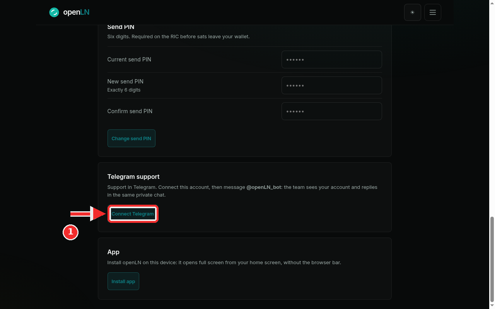
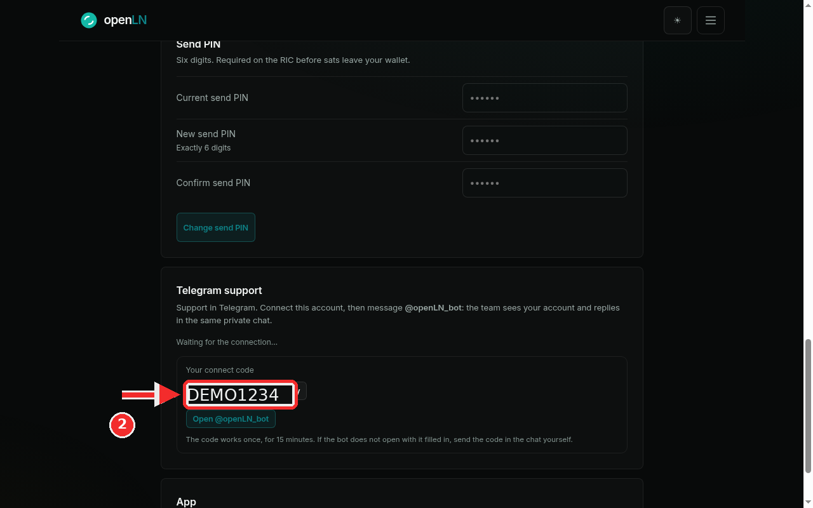

How to connect Telegram support
openLN support runs on Telegram. The support bot is @openLN_bot: you message it like any other private chat, the team sees which openLN account each message belongs to, and the reply comes back in that same chat. This guide links your Telegram to your account once, so you never have to explain who you are or which device you mean. It takes about a minute, and it needs nothing but Telegram itself.
- You are signed in to your openLN account.
- You have Telegram on the device you will chat from, phone or desktop. The connect button opens it for you.
- Nothing to prepare. The app generates a one-time code for you when you press Connect.
Find the Telegram support card and press Connect Telegram
Open the menu and tap Settings. Scroll to the Telegram support card. Its text is a short version of this guide: "Support in Telegram. Connect this account, then message @openLN_bot: the team sees your account and replies in the same private chat." While no connection exists, the card is simple: that line of text and one button, Connect Telegram. Press it.

Take the one-time code and open the bot
The card now shows your connect code, with a Copy button next to it, and under the code a button that reads Open @openLN_bot. Above it, the line Waiting for the connection... means openLN is waiting for the bot to confirm the link, checking by itself every few seconds while the page is open. You can leave the page on screen and carry on. In the example the code reads DEMO1234; yours will be a different mix of letters and digits. It works exactly once, for 15 minutes.
There are two ways to hand the code over. The quick one: press Open @openLN_bot, Telegram opens on the bot chat with the code filled in, and you press Start (or Send) there. The manual one: copy the code, open Telegram yourself, open a chat with @openLN_bot and send the code as a message. Either way, the moment the bot receives the code the connection lands: the card switches to its connected view (Connected as your Telegram name), and from then on the team sees your account whenever you message the bot, and replies in the same private chat.

- One use, 15 minutes. A code can be claimed once and expires 15 minutes after it appears. If it runs out before you use it, press Get a new code and use the fresh one.
- The waiting line is normal. The card checks for the link by itself for about two and a half minutes. If it is still waiting after that, it asks you to reload this page after connecting; reload, and the connected view appears as soon as the link is in place.
- One Telegram per account. Connecting a new Telegram replaces the previous link, so the newest connection is the one your messages are attached to.
- Disconnecting is safe. Press Disconnect on the card and confirm, and the chat link ends; your account, your wallet connection and your sats stay exactly as they are, and openLN never takes custody of your sats. Messages you send to the bot after that are no longer tied to your account.